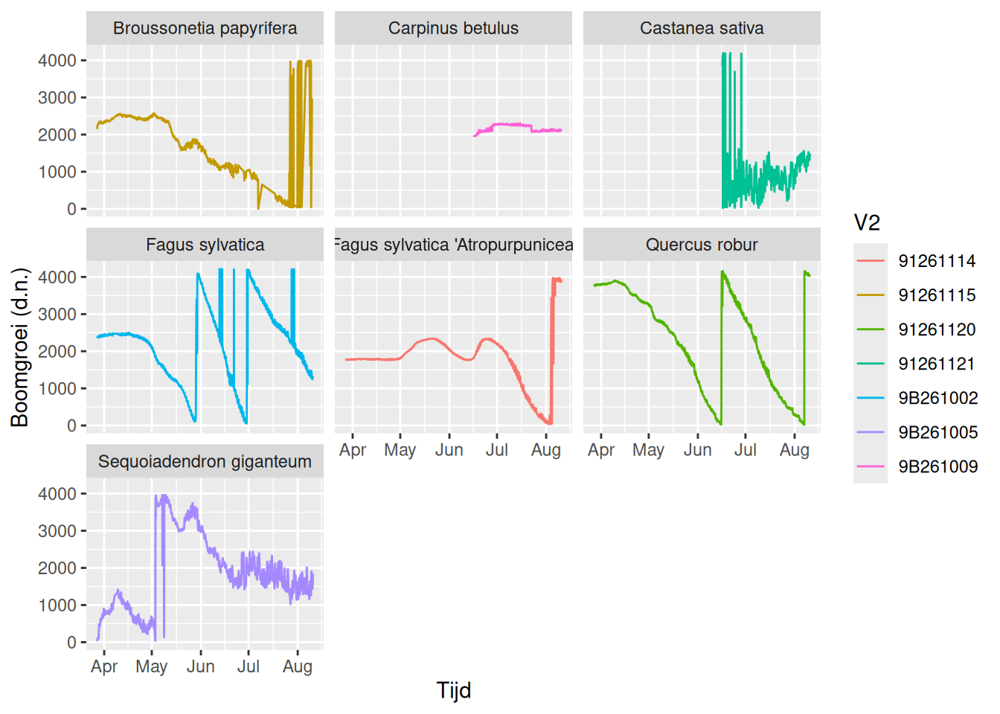
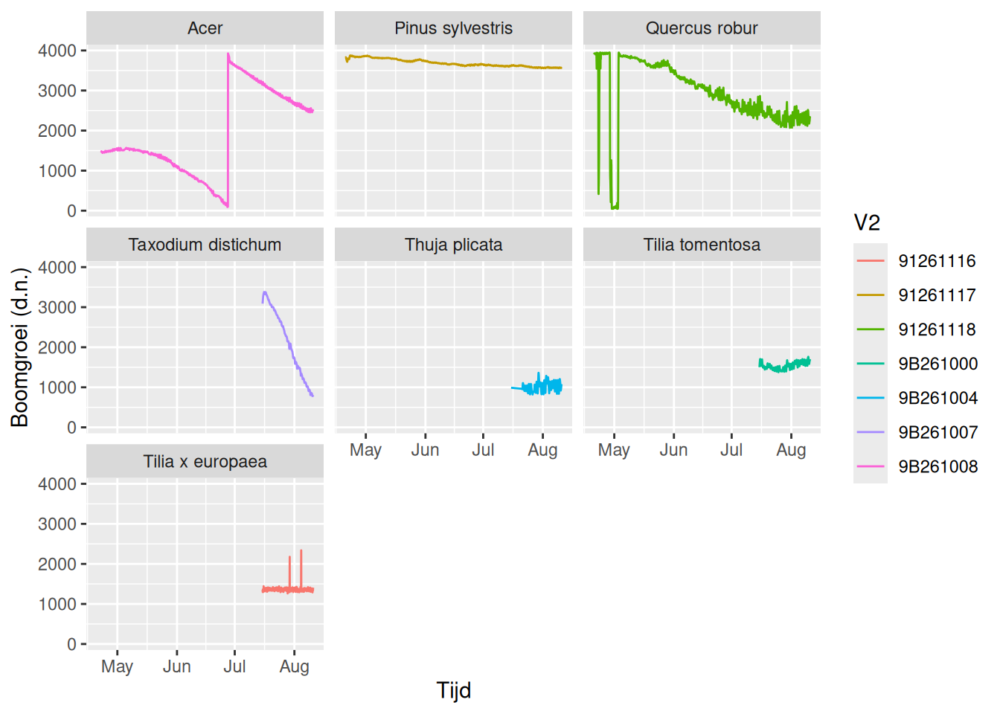
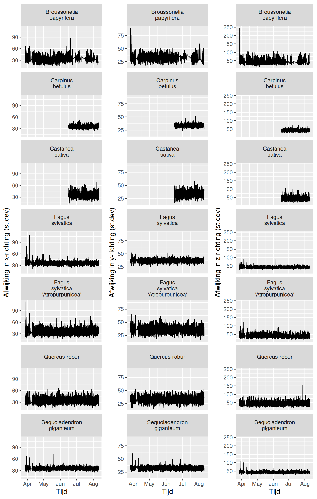
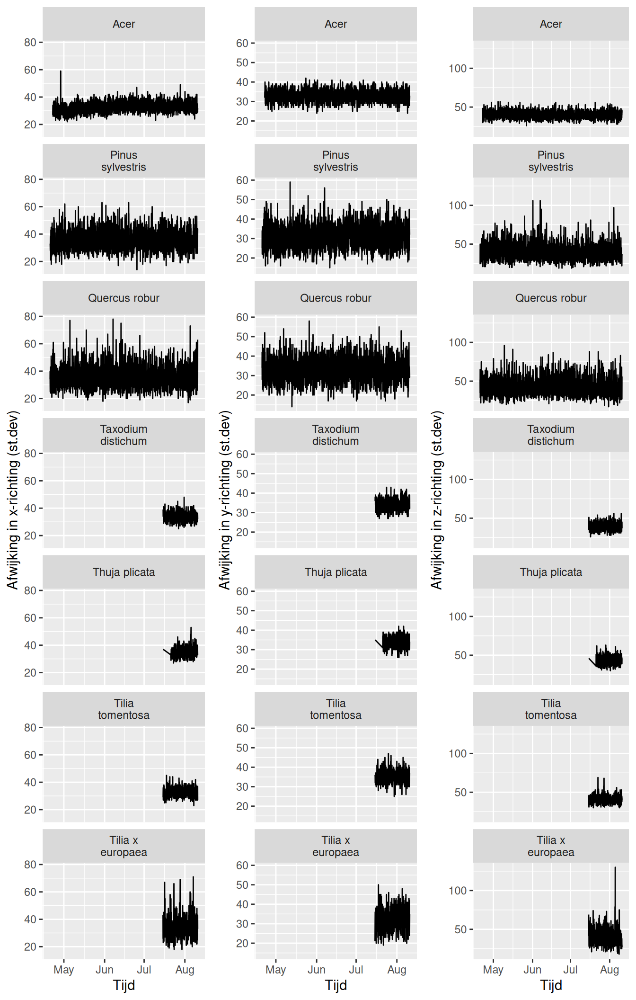
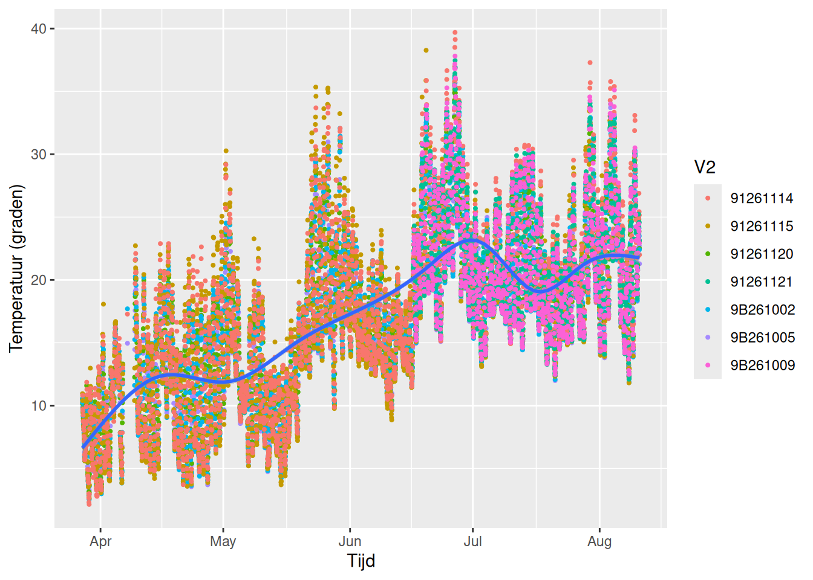
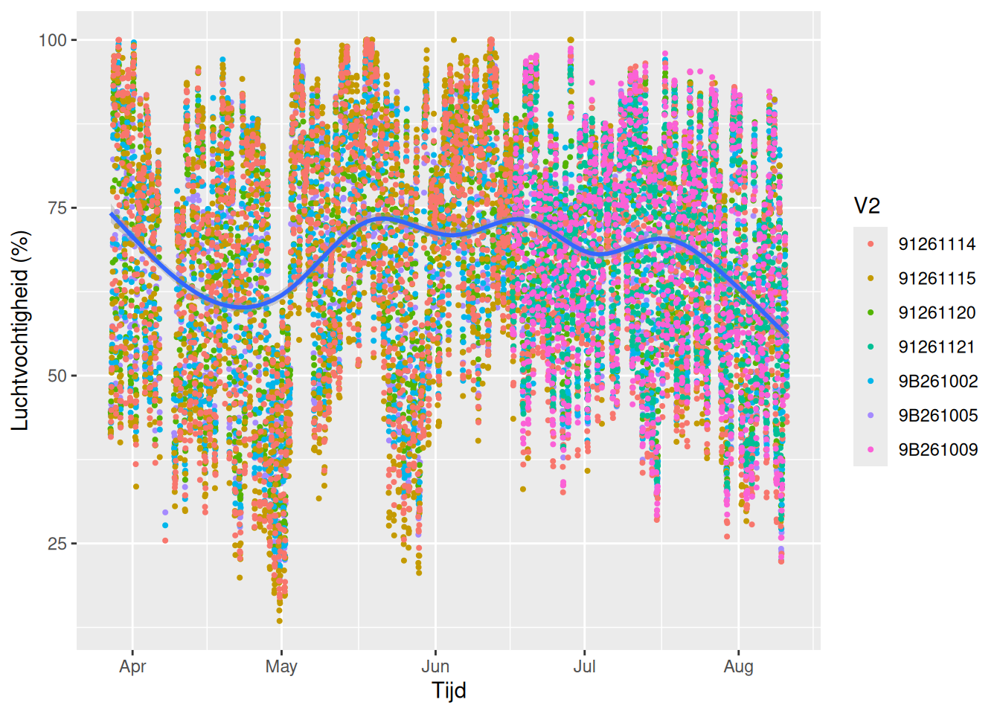
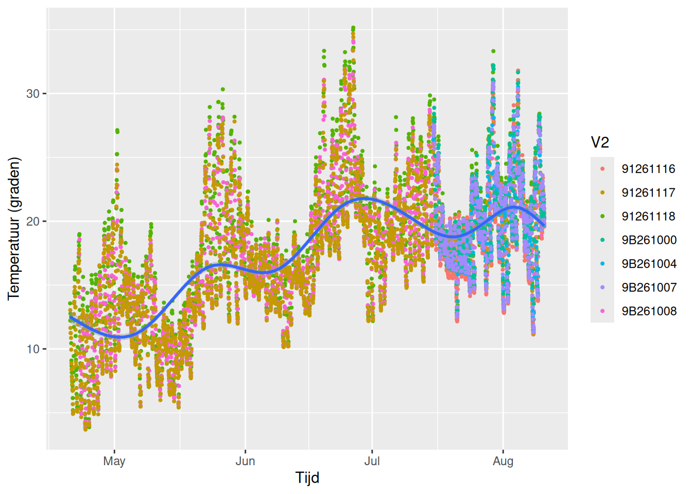
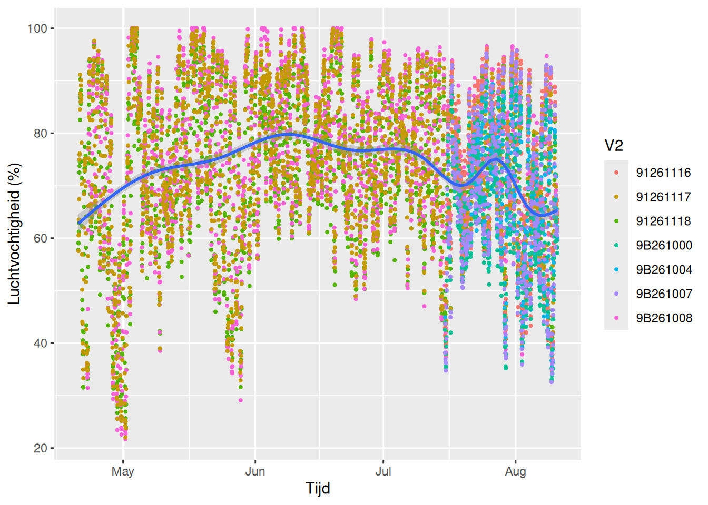
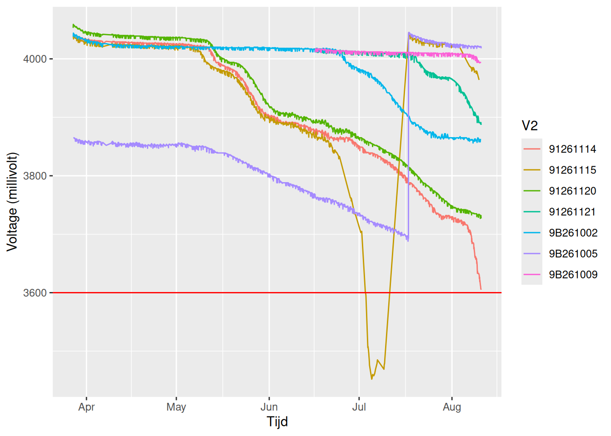
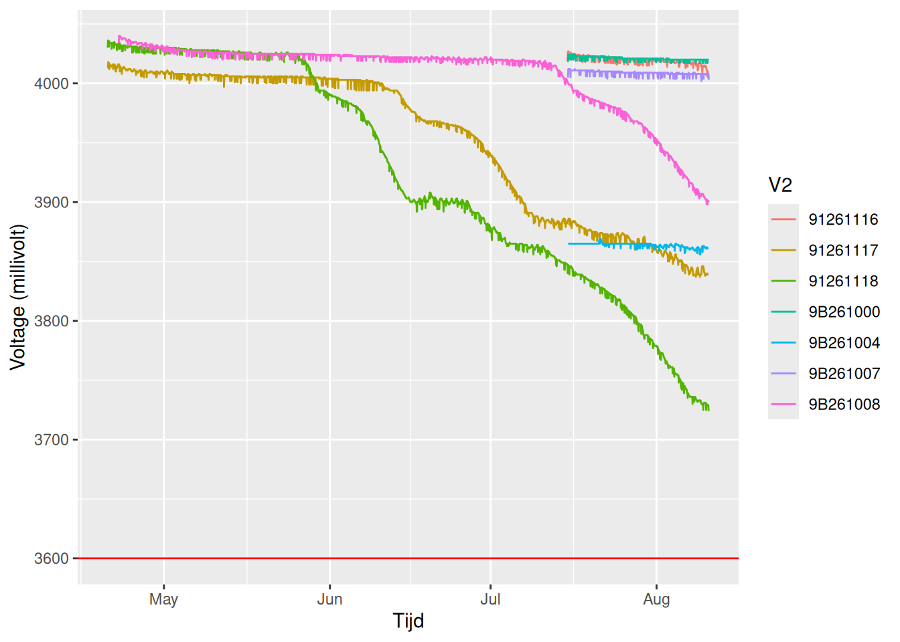

De TreeTalkers van de Bomenluisteraar
De Bomenluisteraar is een door NWO-gefinancierd project (https://doi.org/10.61686/BHNSY02702). Het lectoraat Sustainable Areas and Soil Transitions van Saxion is hierbij penvoerder en voert het uit samen met het lectoraat Civic Technology van de Haagse Hogeschool, samen met partners: de gemeentes Den Haag en Deventer, de Rijksdienst voor het Cultureel Erfgoed, Erfgoedhuis Zuid-Holland, Climate Adaptation Services en Deventer Verhaal.
TipDe Bomenluisteraar: het verhaal van ons groene erfgoed
Bomen vertellen een verhaal: niet alleen over hun leven, maar ook over dat van mensen. Hoe leren we luisteren naar deze vertellers? Bomen in parken spelen een belangrijke rol in ons dagelijks leven door bijvoorbeeld de lucht te zuiveren en schaduw op hete dagen te bieden. Oude bomen zijn vaak geplant door onze voorouders en leven langer dan mensen. Bomen vormen dus onze erfenis en het (groene) erfgoed, maar kunnen niet vertellen wat ze hebben meegemaakt. In de Bomenluisteraar willen wij bomen een stem geven middels multimedia en vertellen hoe bomen in parken reageren op veranderingen in verleden en heden.
Op deze webpagina worden de data van de TreeTalkers van de Bomenluisteraar getoond door middel van enkele grafieken. We hebben een verschillende type TreeTalkers in gebruik:
Cyber met onder meer een dendrometer en sapstroommeter (informatie producent)
Carbon met onder meer een dendrometer (informatie producent)
Soil voor het meten van bodemvocht (informatie producent)
Kaart met de verschillense sensoren
Deventer: Rijsterborgherpark
Den Haag: Clingendael
Boomgroei
De groei van de verschillende bomen in de beide parken. Deze data is nog niet genormaliseerd, maar geeft de ruwe output van de dendrometers.
Deventer: Rijsterborgherpark

Den Haag: Clingendael

Beweging van de bomen
De TreeTalkers zijn uitgerust met een sensor die de beweging meet. De onderstaande grafieken laten de standaard deviatie zien van de verplaatsing in de x,y en z-richting en daarmee hoe sterk de beweging is.
Deventer: Rijsterborgherpark

Den Haag: Clingendael

Temperatuur en luchtvochtigheid
Deventer: Rijsterborgherpark

De meest recente temperatuurmeting.
Gemiddelde temperatuur op 2026-08-10 17:44:31
22.09°C
De waardes lopen uiteen van 20.38°C tot 23.15°CDe luchtvochtigheid over de tijd.

Den Haag: Clingendael

De meest recente temperatuurmeting.
Gemiddelde temperatuur op 2026-08-10 17:49:09
20.04°C
De waardes lopen uiteen van 19.57°C tot 21.01°CDe luchtvochtigheid over de tijd.

Batterijen van de verschillende sensoren
Deventer: Rijsterborgherpark

Den Haag: Clingendael
